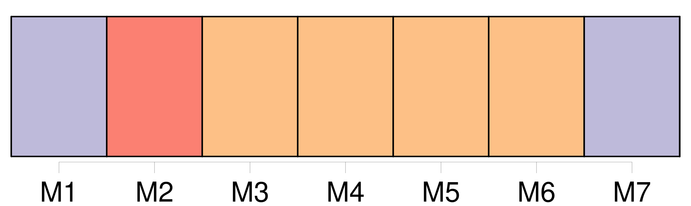
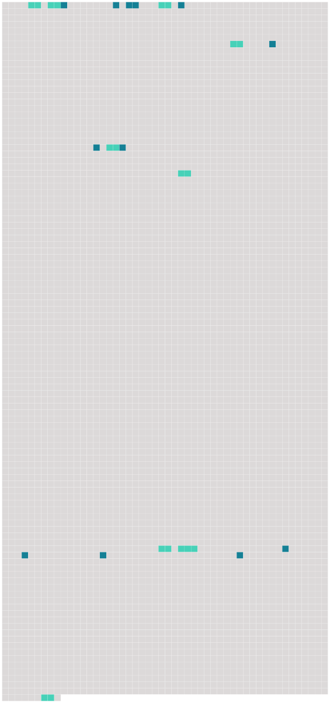

Longueur nb maillons : 21 mentions |
  |
Il y avait bien [Marguerite Dupré] , [une grande] [qui] prenait parfois sa défense, mais alors [c'] était [elle] [qu'] on attaquait, [Marguerite Dupré] , [dont] la maison n'était pas très éloignée de celle de la petite, prenait, en même temps qu'elle, le même sentier. [16 phrases]
[Marguerite Dupré] parla, sans quitter [son] banc : [39 phrases]
Avant de s'éloigner, Mlle Charmes dit encore : [10 phrases]
⁂ [133 phrases] Ce bout de promenade va toujours jusqu'à la maison de [Marguerite Dupré] [La jeune fille] , debout sur le seuil, les regarde venir. On dirait qu' [elle] les attend.
Dès qu'ils sont proches, [elle] vient à eux pour parler et rire un instant, puis [elle] rentre, tandis que Louis Pied Bot, le visage pensif, s'en retourne lentement vers la maison de [son] frère. [61 phrases] Elle avait Louis Pied Bot et [Marguerite Dupré] |
 |
La ressource peut être téléchargée sur la page Ortolang
Si vous avez des questions ou vous voyez des erreurs, merci d'envoyer un mail à silvia.federzoni89@gmail.com
Site développé par S. Federzoni (contact)